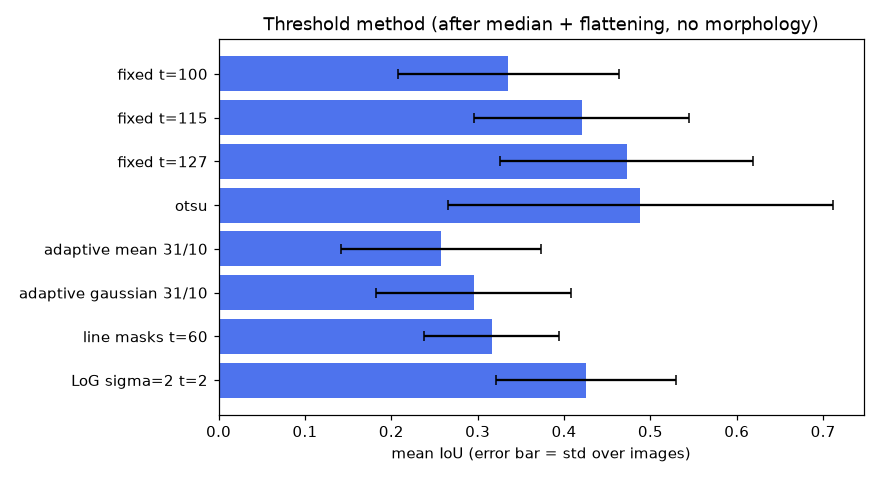
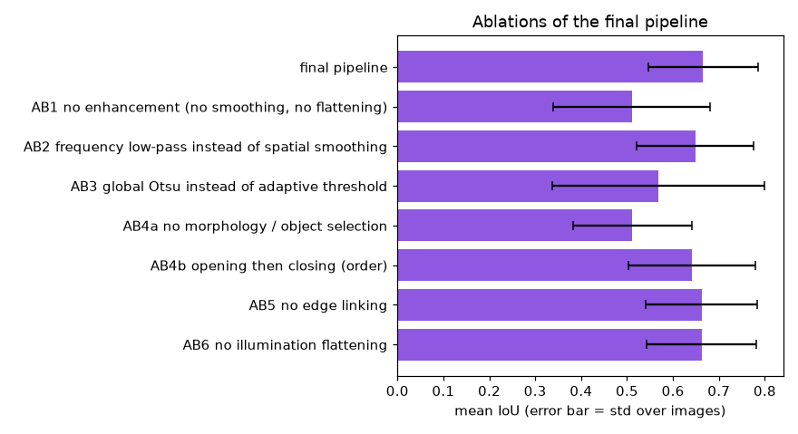
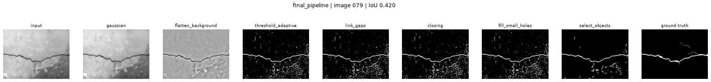
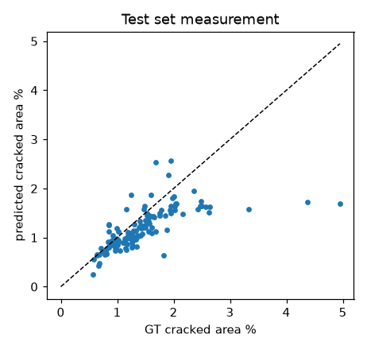

CSE281 Digital Image Processing · Course project
Finding and Measuring Cracks in Concrete
- Classical image processing only: no learned models
- Marwan Saber · Hassan Hisham · Mohamed Wageh · Saad Mohamed · Ahmed Abdelwahed
- Alamein International University
The problem
Where is the concrete cracked, and how badly?
- User: building-inspection engineer
- Output: crack mask, cracked area %, length, severity class
- Missed crack = safety risk · false crack = wasted inspection
- Cracks are only 1.4% of pixels → empty mask = 98.6% accuracy
- Primary metric: IoU of the crack class

Marwan Saber (MEM1) · 0:45
2
Data and analysis
458 real photos, four difficulties
- Özgenel 2019, Mendeley, CC BY 4.0: 458 photos + pixel masks
- Dev 321 / test 137, split by blocks of IDs (no near-duplicates across)
- Shadows, low contrast, rough texture, thin branches
- Crack median gray 111 vs background 183, but they overlap
- Working size 1008 px; 16 gray levels still enough

Marwan Saber (MEM1) · 0:45
3
Approach
Two baselines, three pipelines
| Method | Stages |
|---|
| Trivial baseline | gray < 127 |
| Simple baseline | Otsu + 3×3 opening |
| A | Gaussian 5×5 → global threshold 140 |
| B | Gaussian 7×7 → frequency-domain flattening → adaptive threshold 31/15 → gap linking |
| C (final) | B → closing (disk 3) → small-hole filling → keep long thin objects → measure |
Marwan Saber (MEM1) · 0:30
4
Enhancement (MEM2)
Smoothing helps, equalisation hurts
- Gaussian 5–7 best smoother (IoU .68); median erases thin cracks (.47 at 7×7)
- Equalisation / stretching spread the bright background and amplify texture (.03)
Hassan Hisham (MEM2) · 1:30
5
Restoration and frequency (MEM3)
The right filter depends on the noise

- Salt & pepper: median 15 → 36 dB
- Gaussian / speckle: frequency low-pass best; stronger noise → lower D0
- Ideal LP rings (sinc); Gaussian does not
- Flattening = divide by Gaussian LP background (D0 12)
Mohamed Wageh (MEM3) · 1:30
6
Segmentation (MEM4)
Local threshold beats global and edges

- Otsu on the raw image: IoU .07 (1.4% foreground)
- Edge detectors mark crack borders: Sobel .29, Laplacian .20
- Adaptive mean, block 31, c 15 inside C: .671
- Global Otsu instead of adaptive: −0.098 (AB3)
Saad Mohamed (MEM4) · 1:30
7
Morphology (MEM5)
Morphology adds +0.15 IoU

- Without morphology / selection (= B): .512
- Opening before closing deletes thin cracks: −.025
- Fill only holes ≤ 30 px: keep concrete between crossing cracks
- Shape test: cracks long and thin, stains round
Ahmed Abdelwahed (MEM5) · 0:45
8
Results (test set, run once)
Final IoU 0.670 on 137 unseen images
| Method | Dev | Test |
|---|
| Trivial baseline | .442 | .449 |
| Simple baseline | .066 | .066 |
| Pipeline A | .458 | .443 |
| Pipeline B | .512 | .513 |
| Pipeline C | .666 | .670 |
- Beats the fixed threshold on 131 / 137 images
- Area error 0.33 points; severity correct 62.8%
- Noise σ 30: IoU .622 (3 seeds, spread ≤ .001)
Marwan Saber (MEM1) · 0:40
9
Failures (MEM5)
Where it breaks, and why


- 20 worst: texture / pits 9 · faint branches 6 · wide cracks 4 · GT width 1
- Two fixes tested on dev, neither beat the final → next: texture-dependent threshold
Ahmed Abdelwahed (MEM5) · 0:45
10
Demo (MEM5)
Upload a photo, see every stage
python app/app.py — Gradio, runs locally- Shows input, every stage, red overlay, area %, length, severity
- Invalid files give a clear error
- Live demo on unseen test images, including failure 249
python -m src.run_pipeline --image x.jpg for the CLI

Ahmed Abdelwahed (MEM5) · 0:30
11
Bonus
Faster, smaller, and tested elsewhere
| Bonus | Result |
|---|
| Speed (MEM1) | 0.92 → 0.50 s/img (1.84×), identical masks |
| Compression (MEM3) | RLE on masks: ratio 441 (PNG 164); Huffman on gray 1.36 |
| Second dataset (MEM1 + MEM5) | DeepCrack, no retuning: IoU .520 vs .346 trivial |
| Tests + CI | 157 tests on every push (Python 3.12, 3.13) |
Mohamed Wageh (MEM3) · 0:20
12
Lessons
What we learned
- Measure before designing: Otsu and equalisation looked reasonable and failed
- A stage's value depends on what follows (adaptive loses alone, wins with morphology)
- Small differences are noise: two tuning rounds, combined winners did worse
- Test set touched once: dev .666 vs test .670
- Limits: ground-truth width, scale-dependent parameters, pixel units
Marwan Saber (MEM1) · 0:20
13